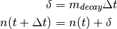
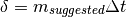
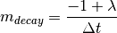
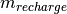

rest module¶
This file contains information about the need dealing with resting.
This module contains class rest.Rest.
Module author: Dr. Namdi Brandon
-
class
rest.Rest(clock, num_sample_points)[source]¶ Bases:
need.NeedThis class contains relevant information about the rest need.
Parameters: - clock (temporal.Temporal) – this keeps track of the current time. It is linked to the Universe clock.
- num_sample_points (int) – the number of temporal nodes in the simulation
-
decay(status)[source]¶ Warning
This function is old and antiquated.
This function decays the Rest magnitude
Rest only decays if the person is not asleep. The decay in sleep

- where
 is the decay rate
is the decay rate is the duration of time in 1 time step of simulation [minutes]
is the duration of time in 1 time step of simulation [minutes] is the amount of decay of rest
is the amount of decay of rest- is the satiation at time t
Parameters: status (int) – the current state of a person Returns: None
-
decay_new(status, dt)[source]¶ This function decays the Rest magnitude
Rest only decays if the person is NOT asleep. The decay in sleep
- where
- is the decay rate
- is the duration of time in 1 time step of simulation [minutes]
- is the amount of decay of Rest
- is the satiation at time t
Parameters: - status (int) – the current state of a person
- dt (int) – the duration of time [minutes] used to decay the need
Returns: None
-
initialize(p)[source]¶ The purpose of this code is to help initialize the Rest need and whatever activity that goes with it, depending on any time the simulation begins
Note
This code is a work in progress
- update the sleep start and end time
- find out if the person should be asleep
- if the Person is asleep,
- sets the appropriate duration of sleep left to do
- sets the rest magnitude to threshold
- sets the rest recharge rate
- sets the schedule to trigger when when the person is scheduled to wake up
- if the Person is not asleep,
- sets the decay rate
- set the magnitude
- sets the schedule to trigger when when the person is scheduled to start sleeping
- update the schedule for the rest need
Parameters: p (person.Person) – the person of interest Returns: None
-
is_workday(p)[source]¶ This function indicates whether or not the sleep event resembles that from a person sleeping for a workday.
Parameters: socio (social.Social) – the social characteristics of the person of interest Returns: True, if the sleep event resembles a workday. False, otherwise.
-
perceive(future_clock)[source]¶ This functions gives the updated rest magnitude if sleep is done from now until a later time corresponding to clock.

- where
- is the suggested recharge rate
- is the duration of time from now until the future time
- given by future_clock
Parameters: future_clock (temporal.Temporal) – a clock corresponding to a future time Returns: the perceived rest level Return type: float
-
reset()[source]¶ This function resets the values in order for the need to be used in the next simulation
Returns: None
-
set_decay_rate(dt)[source]¶ This function sets the decay rate.
The decay rate (
) is assumed to be the slope of a linear function- where
- is the duration of time expected to be awake
 is the rest threshold
is the rest threshold

Parameters: dt (int) – the duration of sleep [minutes] Returns: None
-
set_recharge_rate(dt)[source]¶ This function sets the recharge rate.
The recharge rate () is assumed to be the slope of a linear function
- where
- is the duration of sleep
- is the rest need threshold
Parameters: dt (int) – the duration of sleep after rounding [minutes] Returns: None
-
set_suggested_recharge_rate(dt)[source]¶ This function sets the “suggested” recharge rate. That is, the rate of recharge assuming exact arithmetic (there is no rounding in time, say to the nearest minute)
- where
- is the duration of sleep
- is the rest need threshold

Parameters: dt (int) – the duration of sleep [minutes] Returns: None
-
should_be_asleep(t_start, t_end)[source]¶ This function finds out if the person should be asleep for the initialization of the ABM module
Parameters: - t_start (int) – start time of sleep [minutes, time of day]
- t_end (int) – end time of sleep [minutes, time of day]
Returns: a flag indicating whether a Person should be asleep (if True) or awake (if False)
Return type: bool